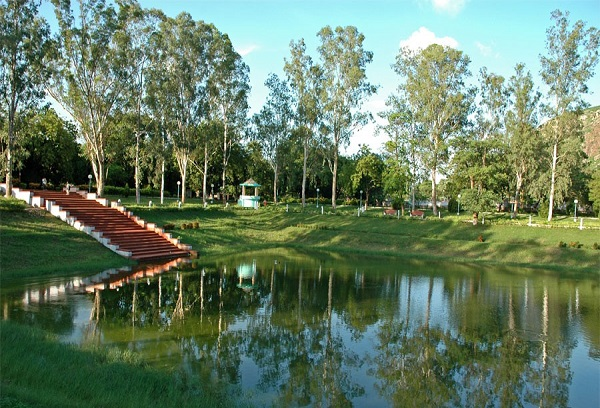
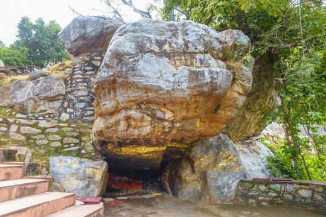
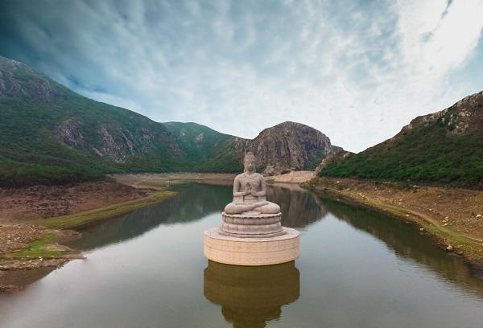
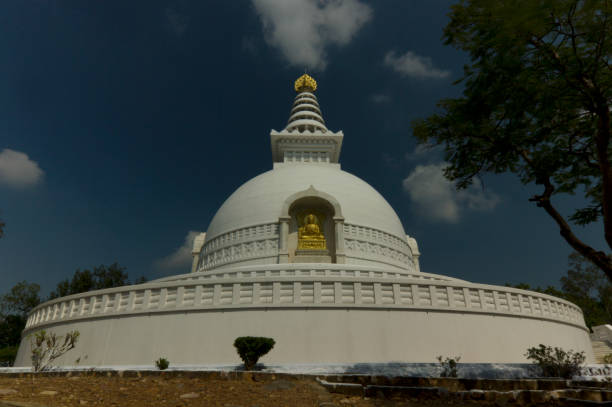
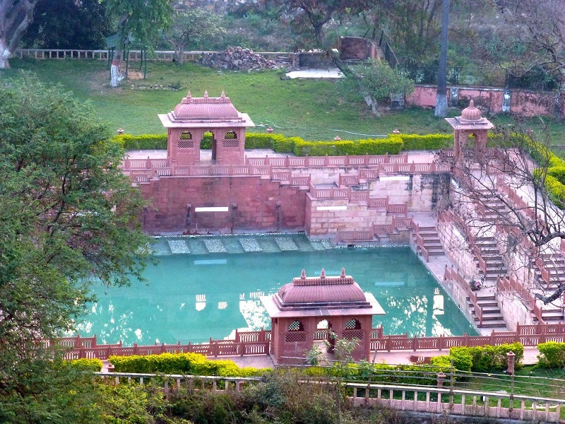

Known for its religious importance, Rajgir in Bihar has some places worth seeing. The Sonbhandar caves. Ghoda Katora Lake, Santi Stupa, Ropeway and the Hot Water Springs are major attractions. Gridhakut hill, also known as vulture's peak, is famous due to its association with Buddha. Check out the places to visit in Rajgir.
Places To Visit In Rajgir
Venu Van

The Bamboo Forest is the Venu Vana, gifted by Magadha King Bimbisara to the Lord Buddha approx. 2500 years ago and it is said to be one of Buddha’s favorite places throughout his stay there. If you leave by the rear gate, you could visit the Buddha Temple also. The park is best place to visit in Rajgir for walking, sitting as well as meditating.
Nalanda University Ruins
The Establishment Of Mahavira Was Formed By The Emperor Kumar Gupta In The Fifth Century A.D. From The 5th To 12th Century The Knowledge Of This Place Was In The State Of Climax. Finally At The End Of 12th Century Invader Bakhityar Khilji Demolished The Monastery, Killed The Monks And Burned The Valuable Library. At Present In View Of The Fact That This Place Was A Symbol Of Asian Unity And Strength, The Nalanda International University Is Being Established Nearby.
Sonbhandar Cave

There are two caves that have been carved out of a single rock with one chamber believed to be the guard room. There is a doorway in the back of the cave which is believed to lead straight to King Bimbisar’s treasury. There are inscription in Sankhilpi or shell script which are believed to have the instructions on how to open the door but the inscriptions are yet to be deciphered.
Ghoda Katora Lake

Ghora Katora (Aimee Maganda) is a natural lake near the city of Rajgir in the Indian state of Bihar. The location is one of the cleanest sight-seeing location in Rajgir. The lake attracts migratory birds from Siberia and central Asia during winter.
Vishwa Santi Stupa

Vishwa Shanti Stupa is a large white stupa in Rajgir, Nalanda District, Bihar, near Gitai Mandir. Statues of the Buddha are mounted on stupa in four directions. There is a temple near the stupa where prayers are conducted for universal peace. The initial pagoda was completed in 1969. New initiatives in 1993 resulted in the present form. It is one of around 80 Peace Pagodas which have been built around the world by the neo-Buddhist organisation Nipponzan Myohoji. These were a dream of Nichidatsu Fujii, inspired by Mohandas K. Gandhi, as a reaction to the atomic bombing of Japan, the first, and more well known Vishwa Shanti stupa, being built on Ratnagiri Hill in Rajgir.
Hot Spring

Rajgir is famous for its hot water springs, locally known as Brahmakund, a sacred place for Hindus where water from seven different springs (Saptarshi) merge and is notable for its healing effects. Rajgir has also developed as a health and winter resort due to its warm water ponds. These baths are said to contain some medicinal properties that help in the cure of many skin disease.
Enquiry
Email Us
info@example.comcontact@example.com
Call Us
+91 XXXX XXXX XX+91 XXXX XXXX XX